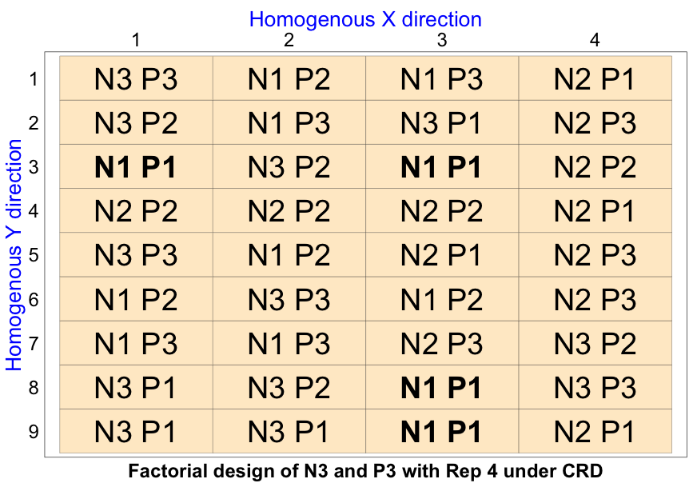
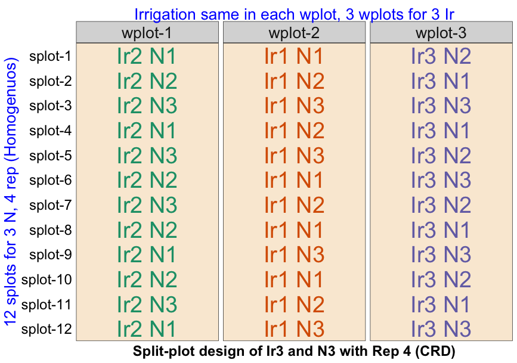
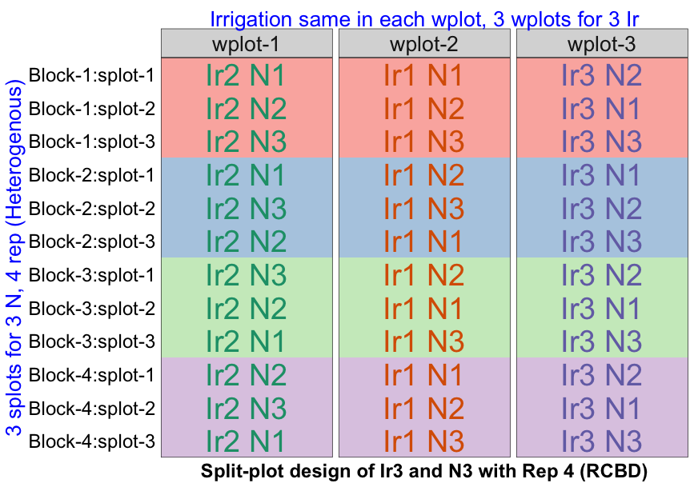
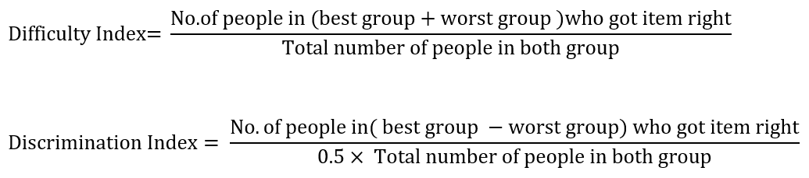
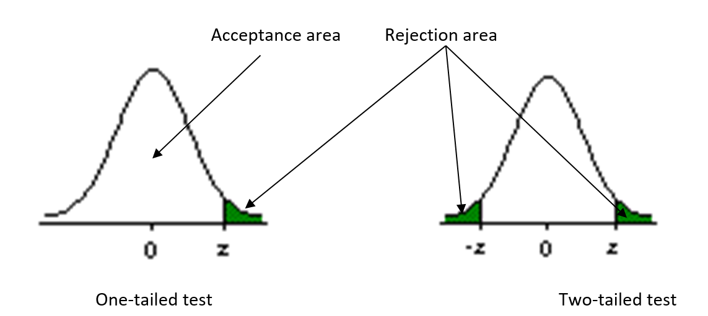
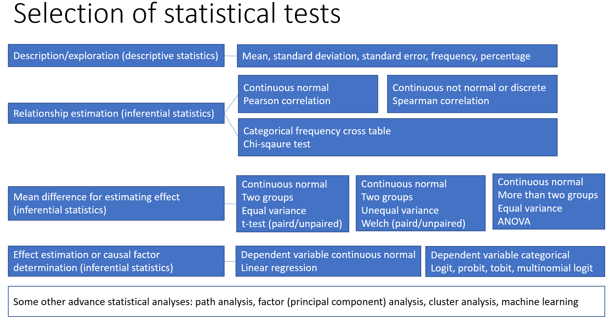

Understanding Research Methodology: A Comprehensive Guide
Research Methodology
To ensure the validity and reproducibility of any research work, all actions must be justified with appropriate reasoning, for which Research Methodology serves as the only acceptable foundation(M. K. Hasan).
| Research methodology > | > Research method > | > Research design > | > Experimental design |
| Research methodology deals with how to conduct a scientific study. As an academic course, it discusses all the theories, methods and procedures that are required to carry out a research work. | Research methods typically include study location, population, sampling, research design, experimental design, variables, data collection tools, and analytical procedures. | Research approach (qualitative, quantitative, mixed) that also includes experimental design. | The intended settings of experimental units, treatment application, randomization, data collection period. |
| This provides necessary explanations of choosing a particular location and methods for a specific research work. | Research method is a part of research methodology. | Research design is a part of research methods. | Experimental design is a part of research design. |
Knowledge, Science, Technology, Research

Knowledge is the stored information in our brain, books or internet that can be recalled when needed. If we cannot recall or retrieve the information that is not considered as knowledge. Knowledge can be gathered randomly from anywhere and by any means. However, if the knowledge is generated using systematic process (problem identification, data collection, analysis and interpretation) then this systematic knowledge is called science. Science is seen through its invention (device - pen, idea - planting date, or practice - row planting), which is called technology. When a technology is perceived as being new to an individual, the technology is termed as innovation (new technology).
Research is the process of generating the knowledge, i.e. the systematic process by which knowledge or technology is generated, in other words, a problem is solved. This process has to be reproducible. It is a systematic progress from the known to the unknown. Research is a crucial tool for making adjustment to the ever changing situation of our universe. Research can be fundamental/basic, applied, and action research depending on their nature.
Fundamental or basic research: This type of research involves experimental and theoretical work aimed at gaining new knowledge without any immediate practical applications, focusing solely on advancing understanding.
Applied research: This research aims to address practical problems, with the goal of improving products or processes, rather than simply gaining knowledge for its own sake.
Action research: This methodology combines action and research to explore specific questions, issues, or phenomena through observation, reflection, and intentional interventions, with a focus on immediate application in a local context. This is more participatory than applied research.
Behavioral research: Behavioral research is a scientific field that investigates the actions and interactions of individuals and groups. It seeks to understand, describe, and predict behavior through systematic observation, experimentation, and analysis. This type of research encompasses a wide range of activities, including studying how people think, feel, and act in various situations, and examining the underlying psychological, social, and environmental factors influencing these behaviors.
Behavioral research employs various methodologies, such as experiments, surveys, observations, and case studies. Experimental methods involve manipulating variables to observe their effects on behavior, often in controlled settings, to establish cause-and-effect relationships. Surveys and questionnaires gather data on attitudes, beliefs, and behaviors from large groups, providing insights into trends and correlations. Observational studies involve systematically recording behaviors in natural or laboratory settings without interference, while case studies offer in-depth analyses of individual or group behaviors over time.
Applications of behavioral research are vast, spanning fields like psychology, sociology, education, healthcare, marketing, and public policy. Insights gained from behavioral research inform interventions, treatments, and strategies to address social issues, improve mental health, enhance educational outcomes, and optimize organizational performance. Ultimately, behavioral research contributes to a deeper understanding of human behavior, helping to create more effective solutions for individual and societal challenges.
Some other types of research can be mentioned.
Historical research: This type of research aims to describe past events to uncover generalizations that aid in understanding both the past and present and, to some extent, predicting the future.
Descriptive research: This research focuses on describing the current state of affairs to identify relationships between variables that are not manipulated.
Experimental research: This research investigates what will happen when specific variables are carefully controlled or manipulated to determine relationships between these manipulated variables and other variables.
Data, Informatin, Fact, Hypothesis, Theory, and Law
| Term | Definition | Example |
|---|---|---|
| Data | Raw, unprocessed observations (numbers, text, etc.). | “Temperature readings: 25°C, 30°C, 22°C.” |
| Information | Processed data with context or meaning. | “Average temperature this week: 26°C.” |
| Fact | An objective, verifiable observation. | “Water boils at 100°C at sea level.” |
| Hypothesis | A testable prediction about a phenomenon. | “Increasing light exposure speeds up plant growth.” |
| Theory | A well-substantiated explanation of natural phenomena. | “Darwin’s theory of evolution by natural selection.” |
| Law | A consistent, universal description of how (not why) phenomena behave. | “Newton’s law of universal gravitation.” |
Key Distinctions:
- Data → Information: Adding meaning turns data into information.
- Hypothesis → Theory: A hypothesis becomes a theory after extensive evidence.
- Theory vs. Law: Theories explain why; laws describe what happens (e.g., gravity law describes attraction; general relativity theory explains it).
A fact is a statement that can be proven true or false based on empirical evidence. It is objective and verifiable, often derived from observation or measurement. Facts are not always necessarily true. While facts are statements that can be proven true or false, they are considered true based on the best available evidence at the time. However, new evidence or better understanding can sometimes change what is considered a fact. For example, it was once considered a fact that the Earth was the center of the universe, but this was later disproved by scientific advancements. Therefore, facts are true as long as they are supported by current evidence, but they can be revised in light of new information. A theory, on the other hand, is a well-substantiated explanation of some aspect of the natural world, based on a body of evidence and reasoning. Theories are broader in scope than facts and can provide a framework for understanding and predicting phenomena. For example, the theory of evolution explains the diversity of life based on evidence from various scientific fields.
A theory is formed based on observation through a systematic process. Initially, observations and empirical data are gathered from experiments or natural occurrences. Scientists then analyze this data to identify patterns, relationships, and regularities. Hypotheses are proposed as tentative explanations for these observations. These hypotheses are rigorously tested through further experimentation and data collection. If a hypothesis consistently explains the observations and withstands repeated testing and scrutiny, it may be integrated into a broader theoretical framework. Over time, as more evidence accumulates and the theory proves robust, it becomes widely accepted as a reliable explanation of the observed phenomena.
Research Problem
A research problem is a specific issue, difficulty, contradiction, or gap in knowledge that a researcher aims to address through systematic investigation. It is the foundation of any research project, guiding the direction of study and focusing efforts on finding solutions or answers. In essence, a research problem sets the stage for the entire research process by outlining what needs to be investigated, why it is significant, and how it can be explored.
Identifying a research problem is a critical step in the research process. It requires careful observation, comprehensive literature review, and engagement with the field’s practical and theoretical aspects. In agricultural extension, addressing the right research problem can lead to significant improvements in how knowledge and technologies are disseminated to farmers, ultimately contributing to enhanced agricultural productivity and rural development. By focusing on real-world issues and gaps in existing knowledge, researchers can ensure that their work is relevant, impactful, and valuable to stakeholders.
A research problem should not be too vague (e.g. effect of climate change on agriculture), not too narrow (e.g. name of the first president of the Malaysia.). It has be new with novelty that has not been done before but consistent with previous research.
Importance of a Research Problem
Guides the Research Process: A clearly defined research problem provides a clear direction for the research process. It helps in formulating research questions, hypotheses, and objectives, ensuring that the study remains focused and relevant.
Determines Research Design: The nature of the research problem influences the choice of research design, methods, and procedures. It dictates whether the study will be qualitative, quantitative, or mixed-methods.
Ensures Relevance: A well-articulated research problem ensures that the research addresses real-world issues or gaps in knowledge, making the findings valuable to stakeholders, practitioners, and policymakers.
Facilitates Resource Allocation: By identifying a specific problem, researchers can better allocate time, funding, and other resources to areas that require attention, optimizing the efficiency and impact of the study.
Enhances Research Quality: A precise research problem helps in maintaining the study’s rigor and coherence, contributing to the validity and reliability of the research findings.
How to Identify a Research Problem?
Literature Review: Conducting a thorough review of existing literature helps in identifying gaps, inconsistencies, and unresolved questions in the current body of knowledge. This can highlight areas that require further investigation.
Practical Observations: Real-world observations and experiences can reveal pressing issues or challenges that need to be addressed. Engaging with practitioners, stakeholders, and communities can provide insights into practical problems.
Expert Consultation: Discussing with experts, mentors, and colleagues in the field can help in identifying significant research problems. Their experience and perspective can shed light on critical areas that may not be immediately apparent.
Previous Research: Analyzing findings and recommendations from previous research studies can reveal new problems or questions that have emerged as a result of earlier work.
Policy Analysis: Reviewing policies, regulations, and strategic plans can uncover gaps or areas needing evaluation, particularly in applied fields like agricultural extension.
Example: Identifying a Research Problem in Agricultural Extension
Context: Agricultural extension involves the dissemination of knowledge and technologies to farmers to improve their productivity, income, and livelihoods. In Bangladesh, agricultural extension services are crucial for enhancing food security and rural development.
Observation: Despite extensive efforts, many farmers in Bangladesh are not adopting modern agricultural practices and technologies. This results in lower productivity and inefficiencies in the agricultural sector.
Literature Review: A review of literature reveals that while several studies have focused on the development and efficacy of extension methods, there is limited research on the barriers to adoption from the farmers’ perspective.
Identified Research Problem: “What are the key barriers to the adoption of modern agricultural practices among smallholder farmers in Bangladesh, and how can agricultural extension services be improved to address these barriers?”
Importance: Understanding these barriers is crucial for designing effective extension programs that are responsive to the needs and constraints of farmers. Addressing this problem can lead to increased adoption of beneficial practices, ultimately enhancing agricultural productivity and sustainability
Steps to Prioritize Research Problems
Identify Potential Problems: Compile a comprehensive list of potential research problems based on literature reviews, expert consultations, observations, and stakeholder input.
Define Criteria for Prioritization: Establish criteria to evaluate and rank the identified research problems. Common criteria include relevance, feasibility, urgency, potential impact, and alignment with strategic national and international goals.
Evaluate Each Problem: Assess each research problem against the defined criteria. This can be done through qualitative assessment, scoring, or ranking methods.
Engage Stakeholders: Involve key stakeholders, including practitioners, policymakers, funders, and the target population, in the prioritization process to ensure the selected problems are relevant and impactful.
Analyze and Decide: Analyze the evaluation results and make decisions on which research problems to prioritize. This might involve selecting the top-ranked problems or those that meet multiple criteria strongly.
Review and Adjust: Periodically review the prioritization process and adjust based on new information, changing contexts, or emerging issues.
Research Proposal
A research proposal is a detailed plan outlining a proposed study, aiming to communicate the significance, methodology, and anticipated outcomes of the research. All the components and methods of a research work chosen by the researcher must have acceptable reasons based on literature and appropriate arguments. Here are the key components of a research proposal:
Title: The title provides a concise summary of the research topic. It should be clear, specific, and informative. It includes what (purpose), who (scope) and sometimes how. It is better to keep around 10-15 words (not exceeding 16 words). You can watch this video to create a smart title https://www.youtube.com/watch?v=LdiJ8qUclQE. You can also take help from ChatGPT for phrasing a smart title.
Abstract: The abstract summarizes the key elements of the proposal. It is a brief overview of the research problem, objectives, methodology, and expected outcomes. In a journal article, it is composed of usually 200-300 words. However, in a thesis it can be extended as required and suggested by the supervisors.
Introduction: The introduction introduces the research topic and establishes the context. It contains background information, statement of the problem, significance of the study, and research questions.
Literature Review: This section reviews existing research and theories related to the topic. It summarizes the relevant studies, identification of gaps in the current knowledge, and justification for the proposed research. A conceptual framework can be drawn based on the facts and theories to visualize the components and connections between various variables in a study. In a journal article, this section is integrated in the introduction section.
Research Objectives: This section clearly defines what the study aims to achieve. An objective should be specific, measurable, achievable, relevant, and time-bound (SMART). Objectives are written usually using ‘to + verb’. This section is also merged with the introduction section in a scientific report and article.
Research Hypotheses: A hypothesis is an intellectual guess based on literature and context that a researcher wants to evaluate and test. This section specifies the clear and focused hypotheses to be tested. Example: training has a positive effect on food security.
Research methods: This section describes the research design and methods to be used. It contains:
Location: Study location where the study will take place.
Research Design: Qualitative, quantitative, or mixed methods.
Population and Sample: Description of the study population, sampling methods, and sample size.
Data Collection Methods: Techniques for gathering data (e.g., surveys, interviews, observations).
Data Analysis: Methods for analyzing the collected data.
Ethical Considerations: Ethical issues and how they will be addressed. For example, informed consent and application of treatments ethically.
Work Plan and Timeline: It provides a time schedule for the research activities and key milestones. It is often presented as a Gantt chart. It is a non-financial budget that allocates time for different activities.
Budget: It outlines the financial requirements of the study. Itemized budget including costs for personnel, equipment, materials, travel, and other expenses.
Expected Outcomes: This section describes the anticipated results and their implications. It contains potential findings, contributions to knowledge, and practical applications.
References: The references include a list of all the sources cited in the proposal. It contains properly formatted bibliography following a standard citation style, e.g. APA, MLA, and EEE. The citations and references must match with each other.
Appendices (not always required): this section provides supplementary information and additional materials such as questionnaires, consent forms, detailed methodology, or supporting documents.
Development of Conceptual Framework of Research
Developing a conceptual framework from a literature review involves identifying key concepts, understanding their relationships, formulating hypotheses or research questions, and visualizing these elements in a coherent structure. This process helps in organizing and guiding the research, ensuring that it builds on existing knowledge and addresses relevant gaps. In behavioral research, such as agricultural extension, a well-developed conceptual framework can illuminate the factors influencing behaviors and provide a clear pathway for investigation. Developing a conceptual framework from a literature review for a behavioral research work involves several key steps. The conceptual framework helps in organizing and visualizing the key concepts, variables, and their relationships that will be studied. Here’s a step-by-step guide to developing a conceptual framework:
1. Identify Key Concepts from the Literature Review:
Read and analyze a wide range of studies related to your research topic.
Identify recurring themes, variables, and constructs that are important in the field.
Extract relevant concepts, theories, and models from the existing literature.
2. Define Relationships Between Concepts from the Literature Review:
Look for empirical studies that examine relationships between the identified concepts.
Note the direction and nature (positive, negative, causal, correlational) of these relationships.
Understand how different concepts are related based on previous research.
3. Develop Hypotheses or Research Questions based on Literature Insights:
Use insights from the literature to develop testable hypotheses or focused research questions.
Formulate specific hypotheses or research questions that your study will address.
Ensure that these are logically derived from the identified relationships.
Hypotheses based on literature might include:
H1: Higher access to agricultural information positively influences the adoption of modern practices.
H2: Perceived risks negatively affect the adoption of modern agricultural practices.
H3: Socio-economic factors such as income and education level significantly impact the adoption behavior.
4. Organize the Concepts and Relationships Visually:
Draw a diagram or flowchart that includes all key concepts (variables) and illustrates the hypothesized relationships among them.
Use arrows to indicate the direction of relationships and labels to describe the nature of these relationships.
Visualize the structure of the concepts and their relationships.
5. Refine the Framework:
Review and refine the framework to ensure all relevant concepts and relationships are included.
Simplify where possible to make the framework easy to understand and interpret.
Ensure the conceptual framework is clear, coherent, and comprehensive.
Research Design
Research design means the strategy which is planned to answer the research questions. It essentially has the theories and models related to the research questions, sampling frame, data collection methods and analytical approaches. There are two broad types of research design or approaches: quantitative and qualitative. Although research approach is a broader term, still research design and approach are used interchangeably. There are two philosophical approaches of research – inductive and deductive. Inductive approach formulates theory from observations, and deductive approach test hypothesis based on observations using the theoretical framework.
Mixed method research answers research questions by combining both quantitative and qualitative research methods where one complements another. This a triangulation of different methods to clearly understand a research problem. The information revealed by quantitative method can also be validated using the information obtained using qualitative method.
Differences between quantitative and qualitative research design/approach
| Aspect | Quantitative | Qualitative |
| Objective | Quantify data, generalize results to a population | Understand concepts, thoughts, or experience |
| Data Collection Methods | Surveys, experiments, structured observational studies | Interviews, focus groups, participant observation, document analysis |
| Data Type | Numerical data | Non-numerical data (text, audio, video) |
| Nature of Data | Structured, quantifiable | Unstructured or semi-structured, not easily quantifiable |
| Analysis | Statistical analysis (e.g., regression, ANOVA) | Thematic, content, narrative analysis, coding |
| Generalizability | High, applicable to larger populations | Low, specific to particular contexts |
| Depth vs. Breadth | Breadth across large number of cases | Depth within a smaller number of cases |
| Approach | Deductive, testing hypotheses | Inductive, generating hypotheses |
| Examples | Measuring effect of a teaching method on performance | Exploring experiences of farmers with disasters |
Experimental Design
Experimental design is a part of a research design. In order to establish a cause-and-effect relationship, manipulation of variable(s) is done with specific settings of sample(s) or experimental units. Such specific settings or approaches are called research design. Research design is the blue-print of research. It helps to control variance and minimize errors in addition to the accurate conduction of study, efficient allocation of resources and well defined reproducible work procedures. It is required for yielding maximal reliable and valid information with minimal efforts. It includes hypothesis formulation, selecting samples, random assignment of treatments, replications and local control. Research design is done with utmost care in advance since any error in it can ruin the entire research efforts.
Essential Components of Experimental Designs
A good experimental design maximizes reliability of information and minimize experimental errors, which is ensured by the following three components:
Randomization: Treatments must be assigned randomly to experimental units. Any bias can result in variance in result that can falsely be attributed to the treatments.
Replication: To improve accuracy and minimize error, identical treatments are applied to more than one experimental units. Thus, the number of experimental units with the identical treatments are called replication.
Local control: A researcher must have a high level of control over the variables. To attribute the variance truly to the treatments, factors and conditions other than the treatments must be kept homogeneous for all experimental units. This process of keeping homogeneity among the experimental units is called local control. If a researcher fails to maintain homogeneity, the effect of replication will be significant and they cannot claim that the resulted variance in the dependent variable is due to the effect of the treatments.
Types of experimental design in social research
Pre-experimental or non-experimental design: Randomization is not practical to be used in this case. This design can take different forms, some of which are explained here.
One group post-test design: Data is collected after certain time of applying treatments. In this design, no pretest/benchmark/initial data is available, and therefore, exact effect of the treatment is not possible.
One group pretest-post-test design: Data is collected twice – firstly before applying the treatment and secondly after certain period of treatment application. Effect is measured by deducting the initial quantity from the final quantity.
Static group comparison (Control group post-test) design: Data is collected after certain time of applying treatments from the treatment groups. Data is collected from another control group that has not received the treatment. Two groups should be as similar as possible to make them comparable. However, the groups should also be as distant as possible to avoid spill-over/triple effect of the treatment.
True experimental design: Randomization is properly done and at least a control group is included.
Post-test control group design (Randomized control trial – RCT): Participants are randomly selected from control and treatment groups. Observations are made after applying the treatments.
Pretest-post-test control group design: Similar to the RCT design, participants are randomly assigned treatments, but data is collected before the treatment application and after certain period of the treatment application.
Quasi-experimental design: Randomization is not possible, such as in psychological study. For example, we cannot assign a school going kid in the drop out group.
Non-equivalent control group design: Similar to the pretest-post-test control group design, it has both control and treatment groups but without randomization. It also similar to the static group comparison design because both have control groups and do not have randomization, but different because the static group comparison design does not have the pretest step.
Interrupted/multiple time series design: Similar to the non-equivalent control group design but several observations are taken before assigning the treatment and several observations are taken after assigning the treatment. By analyzing data points over time, both before and after the intervention, a time series design allows researchers to observe trends that existed prior to the intervention. This helps in distinguishing the actual effect of the intervention from pre-existing trends, reducing the risk of selection bias. Using lagged variables (past values of the dependent variable) can help account for autocorrelation (if present value is correlated with past values) and control for past influences, making it easier to isolate the effect of the intervention. Thus, it helps to minimize selection bias and endogeneity problems.
Experimental designs in agricultural and medical sciences
Natural sciences, such as Agronomy, Horticulture, Pathology, Fisheries, and Anatomy, three basic (one factor) and two advance research designs (more than one factor) are usually used. The basic designs are: CRD, RCBD and LSD. The advance designs are factorial design and split-plot design. All of these designs must have randomization, replication and local control.
CRD – Completely Randomized Design: One factor design where all units are homogeneous, i.e. experimental field is homogeneous in both direction. Treatments are applied randomly to all units.

RCBD – Randomized Complete Block Design: One factor design where field is homogeneous in one direction but heterogeneous in another direction. The heterogeneous direction is divided into a number of blocks equal to the number of replications. Randomization of treatment is done within each block.

LSD – Latin Square Design: One factor design where the field is heterogeneous in both directions. Therefore, treatments are applied randomly but restricted from both directions. Each row or column receives a treatment only once. It is a restricted design, so degree of freedom is less compared to the CRD and RCBD.

Factorial Design: Two factors or treatments and both are easy to manage or manipulate. For example, effect of N and P on rice yield. This design can follow any of the basic designs.


Split-plot design: Two factors where one is easy to manager (fertilizer) and another is difficult to mange (irrigation). For example, effect of N and irrigation on rice yield. Firstly, the factor which is difficult to manage is randomly assigned to different whole plot (first stage randomization). Secondly, the factor which is easy to manage is randomly assigned to the split plots within each of the whole plots (second stage randomization). This design can also follow any of the basic designs.


Scale and Measurement
A Scale means a measuring tool that puts a value, score, word, or symbol against a response obtained from a respondent. The method of assigning a number for the value, score, word, or symbol is called measurement. Examples of the scale include tape, balance, measuring cup, thermometer etc. In social and behavioral science, data is collected using Thurstone scale, Likert scale, Guttman scale, semantic differential, rating scale, multidimensional scaling and so on. However, there are many other ways of collecting qualitative information from the respondents, e.g. alternate response items, sentence completion items, ranking items, open ended questions, multiple choice questions, observation checklists, situation tests, and projective techniques.
Four levels of measurement (nominal, ordinal, interval, and ratio) are possible to obtain from various scales of measurement that are explained here.
Nominal level of measurement: What is your gender? Answer: Male = 1, Female = 2; Are you a student? Answer: Yes = 1, No = 2. This type of assigning number to responses is called nominal level of measurement. Here the number is used just to identify the response, not to quantify it. In this level, true zero point is absent and the responses cannot be ordered based on practical values. Therefore, mathematical operations are not allowed for this nominal values. Permissible statistical operations are: frequency, percentage, chi-square test etc.
Ordinal level of measurement: What is your age group? Answer: Adolescence = 1, Young = 2, Old = 3; How much do you believe that ghost exists? Not at all = 0, Low = 1, Medium = 2, High = 3. Here, the categories can be ordered but the intervals are not equal and true zero point is absent. Therefore, mathematical operations are still not allowed. Permissible statistical operations are: frequency, percentage, chi-square test, correlation coefficient based on rankings etc.
Interval level of measurement: What is the outside temperature now? Answer: 25°C, What is your monthly income group? Answer: BDT 20,000 or less = 1, BDT >20,000 to 40,000 = 2, BDT >40,000 to 60,000 = 3, BDT >60,000 = 4. Here, the intervals are equal but true zero point is absent, i.e. zero does not mean absence of attribute. Example, 0°C does not mean absence of temperature. permissible statistical operations are: mean, standard deviation, Pearson product moment correlation coefficient, t-test, F-test etc.
Ratio level of measurement: What is your age? Answer: 25 years; What is your weight? Answer 60 kg; What is your family size? Answer: 6. This is the highest level of measurement which has a true zero point and intervals are equal. All types of mathematical and statistical operations are allowed.
Development of test for measurement
1. Multiple Choice Questions (MCQ): More than one, usually four to five, probable options are provided for answers. One option is typically true and other alternatives are distractors which are prepared with care so that the distractors are related to the correct option but not correct. Good distractors should receive at least 2% of the responses. Item analysis (difficulty index and discrimination index) based on pretest is done to select the items for the tests. The best 27% and worst 27% of the items are retained for the questionnaire. The formula is similar to the Kudar-Richardson (KR-20) coefficient of split-half reliability.

Possible range of the difficulty index is 0.00 to 0.99, and that the discrimination index is -1.00 to +1.00. Items to be retained for the test have difficulty index from 0.50 and 0.70 and discrimination index from 0.20 to 0.29 (twenties). The difficulty index is inversely correlated with the discrimination index.
2. Alternate response items: The responses include only two possible options and either one is intended to be selected by the respondents. Example: Where would you prefer to live? Options: a) City, b) Rural area.
3. Open ended questions without any given answers. Example: What would be the consequences if population growth is allowed to continue unabated?
4. Sentence completion items: Unfinished statements. Example: Our ancestors had large families because _________________.
5. Ranking items: Respondents are asked to rank the items according to their importance, values or preferences.
6. Pairwise ranking: Respondents are asked to rank two items from a list of more than two items in all possible combinations. The scores are noted in a matrix format. It is particularly useful for less educated people. It reduces the cognitive burden of the respondents. To interpret the results, you can count the number of times each item is preferred.
Apple (A) |
Banana (B) | Cherry (C) | Date (D) | Ranks (R) | |
| Apple (A) | – | A | A | A | R1: Apple: 3 |
| Banana (B) | – | – | B | B | R2: Banana: 2 |
| Cherry (C) | – | – | – | C | R3: Cherry: 1 |
| Date (D) | – | – | – | – | R4: Date: 0 |
7. Projective technique: Respondents are asked to draw something (e.g. happy and unhappy family) or write a paragraph telling their thoughts before/after a given situation. This technique unknowingly reveals their attitudes, values and beliefs.
8. Multidimensional scaling: Respondents are asked to point their position in a quadrant in a two dimensional aspects.

9. Rating scale: Respondents are asked to rate the statements against scores, percentage, or descriptions. Example: To what extent did the cyclone Remal affect your standing crops? Options: Low | Medium | High.
Development of Scales
In behavioral research, a researcher may not find any existing scales to measure attitudes, feelings, perceptions, aspiration, fatalism, interest, perception, personality traits or behavior of respondents. In this case, they must develop a scale that can measure such psychological constructs with reliability and validity. This is done to quantify the mysterious mental world of an individual. Four major ways to develop scales are:
Thurstone (differential or equal appearing interval) scales,
Likert (summated) scales,
Guttman (cumulative) scales, and
Semantic differential scales (asking participants to place a mark along a line between two opposite adjectives, e.g. good —— bad).
Likert scales
Likert scales are widely used to measure attitudes and perceptions in social research. In a summated rating scale, individuals express their agreement or disagreement with each statement, and their scores for all statements are summed to determine their overall characteristic. Likert scales, developed in 1932, use a familiar five-point bipolar response format. These scales typically ask respondents to indicate their level of agreement or disagreement, approval or disapproval, or belief in the truth or falsehood of statements. The key aspect of a Likert scale is having at least five response categories to ensure ordinal data can be treated as interval data.
Here are some examples of Likert scale responses:
Frequency: Never – Seldom – Sometimes – Often – Always
Agreement: Strongly Agree – Agree – About 50/50 – Disagree – Strongly Disagree – Don’t Know
Approval: Strongly Approve – Approve – Need more information – Disapprove – Strongly Disapprove
Opposition: Strongly Opposed – Definitely Opposed – A bit of both – Definitely Unopposed – Strongly Unopposed
While “Don’t Know” is optional, responses like “About 50/50,” “Need more information,” or “A bit of both” are preferable. Seven-point scales can be created by adding “very” to the extremes, enhancing reliability. It’s best to use a wide scale, as responses can always be condensed during analysis.
Steps to Construct a Likert Scale
Assemble Statements: Gather a large number (e.g., 50) of clear, favorable, or unfavorable statements relevant to the attitude under study.
Administer to Subjects: Present these statements to a representative group.
Score Responses: Score the responses for positive and negative statements according to the rules.
Total Scores: Sum the scores for all statements to get each individual’s total score.
Analyze Scores: Evaluate the reliability of the items for the study using the following formula:

A t-value of 1.75 or higher indicates significant differentiation between high and low groups. Statements with t-values equal to or greater than 1.75 are selected for the final investigation.
Criteria for Constructing Statements
When creating statements for Likert or Thurstone scales, follow these criteria set by Edwards (1957):
Avoid past-tense statements; focus on the present.
Avoid factual statements or those that could be interpreted as such.
Avoid statements that can be interpreted in multiple ways.
Ensure statements are relevant to the psychological object under study.
Avoid statements that nearly everyone or no one would endorse.
Select statements covering the entire range of the affective scale.
Use simple, clear, and direct language.
Keep statements short, ideally under 20 words.
Each statement should contain a single thought.
Avoid universal terms like “all,” “always,” “none,” and “never.”
Use words like “only,” “just,” and “merely” sparingly.
Prefer simple sentences over compound or complex ones.
Avoid complex vocabulary that may not be understood by respondents.
Avoid double negatives.
Population and Sampling
In research across social, agricultural, and natural sciences, the concepts of population and sample are fundamental for gathering data and drawing conclusions. Understanding the distinction between population and sample is crucial because it influences research design, data collection, and the validity of conclusions. A well-chosen sample allows researchers to make inferences about the population without studying every member, which is often impractical.
Population: A population is the entire group of individuals, objects, or phenomena that a researcher aims to study. It encompasses all members that fit the criteria for inclusion in the research.
Social Science: The population might be all teenagers in a country when studying social media usage.
Agricultural Science: It could be all the corn plants in a specific region when assessing crop yield.
Natural Science: It might include all the lakes in a region when examining water quality.
Example:
Social Science: If studying the voting behavior of adults in the United States, the population would be all eligible voters in the country.
Agricultural Science: For a study on pest resistance in wheat, the population would be all wheat plants in the area of interest.
Natural Science: In researching the migration patterns of monarch butterflies, the population would be all monarch butterflies across North America.
Sample: A sample is a subset of the population selected for actual study. It is meant to be representative of the population to ensure that the results can be generalized.
Social Science: Researchers might select a sample using random or stratified sampling to ensure diversity and representativeness.
Agricultural Science: Sampling might involve selecting specific plots of land or groups of plants to study soil health or crop yields.
Natural Science: Researchers might sample a specific number of lakes or animal individuals to study broader environmental patterns.
Example:
Social Science: To study voting behavior, researchers might survey 1,000 voters from various demographics and regions.
Agricultural Science: For a study on wheat pest resistance, a sample could be 50 wheat fields randomly selected across the region.
Natural Science: In a study of water quality, the sample might include 30 lakes from different parts of the region.
Sampling Techniques
The process of obtaining representative samples from a population (sampling frame) is called sampling. Without proper sampling, conclusions will not be valid for the population. In a research report, the population and sample size must be mentioned along with their formula, confidence interval, margin of error and reference. For more details on sample size, you can read this article – Determining Adequate Sample Size for Social Survey Research. For determining the required sample size you can use this web applet – https://kamrulext.shinyapps.io/sample/. However, sample size is seen smaller than the required number due to limited time and resources. In this case, the confidence interval and margin of error will tell the reader about the strength of the conclusion.
Broadly sampling techniques are of two types: probabilistic and non-probabilistic sampling. Different types of sampling techniques are discussed here.
Probability/Probabilistic sampling: It is based on the randomization or random selection where every unit of a population has the same chance of being selected as a sample. Randomization can be ensured in five ways:
Simple random sampling: Select randomly (using lottery or computer software) required number of samples from a population.
Systematic random sampling: Select every 5th, 10th or any other systematic unit as sample from an ordered list of population.
Stratified sampling: The population is divided into homogeneous strata and samples are then drawn from each of the strata proportionately to the sizes of the different strata or disproportionately. Randomization can be done using simple or systematic way. Thus, it can be stratified proportionate/disproportionate simple random/systematic random sampling.
Multi-stage or double sampling: The population is divided into primary sampling units from where required number of units are selected. Each of the selected primary units are again divided into secondary sampling units from where required number of units are again selected. This can go even tertiary or further levels. In this way, we can select divisions, districts, sub-districts, unions, villages and households. In one or more of these stages, there may have several strata. In this way, we can form several types of sampling techniques:
Multi-stage stratified proportionate
simple random sampling
systematic random sampling
Multi-stage stratified disproportionate
simple random sampling
systematic random sampling
Cluster or area sampling: Cluster sampling is a probability sampling method used to improve efficiency when dealing with large, dispersed populations. In this approach, the population is divided into clusters, often based on geographical areas or other natural groupings (e.g. fishermen, crop farmers, and dairy farmers). Some entire clusters are then randomly selected, and all individuals within these chosen clusters are included in the sample. This method reduces costs and simplifies data collection, as it focuses on specific locations or groups rather than individuals scattered across a wide area. However, cluster sampling can introduce cluster bias if the selected clusters do not accurately represent the diversity of the entire population.
Non-probability/non-probabilistic sampling: Randomization may not be suitable in many cases, for example, in psychological or medical studies. We cannot willingly put a school-going kid as a drop out or we cannot inoculate a pathogen in a healthy body that will be a violation of research ethics. Therefore, non-probability sampling is suitable in this case where each of the units does not have the same opportunity for being selected as a sample. This type of sampling helps exploration of a subject matter but lacks generalization ability.
Accidental/convenience/haphazard sampling: Sample is taken based on the who-comes-first basis. For example, interviewing some people from a tea stall, interviewing households located near the roadside.
Purposive sampling: A case is selected based on the judgment of the researcher that the case is assumed to serve as a useful sample.
Snowball/network/chain/reputational sampling: First arbitrarily a sample is chosen and subsequent samples are drawn by requesting the first sample about potential further samples. This process goes until sufficient samples are selected. This process mimics the snowball that increases in size when rolling.
Quota sampling: Quota sampling is a non-probability sampling method used in research to ensure that specific subgroups are adequately represented within the sample. Researchers divide the population into exclusive subgroups (e.g., age, gender, income level) and then determine a target quota for each subgroup. Participants are selected non-randomly until these quotas are met. This method helps in reflecting the characteristics of the overall population within the sample. Although it ensures diversity and can be more practical and cost-effective than random sampling, quota sampling may introduce selection bias as the sample might not be truly representative of the population.
Difference between quota and cluster sampling
| Aspect | Quota Sampling | Cluster Sampling |
|---|---|---|
| Type | Non-probability sampling | Probability sampling |
| Purpose | Ensure representation of specific subgroups | Improve efficiency and cost-effectiveness for large, dispersed populations |
| Method | Population divided into subgroups based on certain characteristics; non-random selection until quotas (specific number of samples) are met | Population divided into clusters; entire clusters are randomly selected and all individuals within selected clusters are included |
| Selection Basis | Non-random | Random |
| Advantage | Ensures diversity and representation of key subgroups | More practical and cost-effective for large populations |
| Disadvantage | Can introduce selection bias and may not be truly representative of the population | May introduce cluster bias if selected clusters are not representative of the population |
Data Collection Tools
Interview schedule and questionnaire are widely used for collecting social data. Many people unknowingly use these two terms interchangeably, but they are not the same although the both are printed set of questions. These can be structured (all questions are set in advance), non-structured (questions are framed during interview by expert interviewers), or semi-structured (some questions are prepared in advance and some are not). The differences are given here.
Interview Schedule: Used in qualitative research or in-depth studies where understanding context, emotions, and detailed responses are important. For instance, a researcher studying job satisfaction might use an interview schedule to gather detailed insights from employees.
Questionnaire: Used in large-scale surveys or quantitative research where standardized data is needed. For example, a market research firm might use a questionnaire to gather feedback from thousands of customers about a new product. When a questionnaire is sent by mail, it is called mailed questionnaire. The examination question is also an example of questionnaire.
| Aspect | Interview Schedule | Questionnaire |
|---|---|---|
| Definition | A structured set of questions used by an interviewer to guide a face-to-face or telephone interview. To be structured, the interview schedule should be self-directed, i.e. instructions to fill the schedule should be clearly included. This also applies for the questionnaire. |
A written set of questions provided to respondents to fill out on their own |
| Method of Data Collection | Administered by an interviewer | Self-administered by the respondent |
| Question type | Open type can be included. | Mostly closed form questions, i.e., answers are mentioned in the questionnaire in different forms (MCQ, or rating statements). |
| Pronouns used in the questions | I, we, us, our | You, your, yours |
| Interaction Level | High interaction between interviewer and respondent | No interaction; respondent completes it independently |
| Flexibility | Allows for probing and follow-up questions | Limited to predefined questions; no room for probing |
| Clarification | Interviewer can clarify questions if needed | No immediate clarification; instructions must be clear |
| Response Rate | Generally higher due to personal interaction | Can vary; often lower due to lack of personal engagement |
| Cost | Higher, due to interviewer training and time | Lower, as it doesn’t require interviewer involvement |
| Anonymity | Less anonymity, as interaction is personal | Greater anonymity, which may encourage honest responses |
| Bias | Potential for interviewer bias | Reduced bias, as there is no interviewer influence |
| Data Consistency | May vary due to different interviewers’ styles | More consistent, as all respondents receive the same questions in the same format |
Steps in preparing a questionnaire or interview schedule
Preparing a good questionnaire or interview schedule involves several key steps to ensure that it effectively gathers the necessary information while being clear and easy for respondents to complete. Here are the steps:
Define the Objectives: Clearly articulate the purpose of the questionnaire and what you hope to achieve. Define the specific information you need to collect.
Identify the Target Audience: Determine who will be responding to the questionnaire. Understand their background, language, and any specific characteristics relevant to the study.
Choose the Mode of Administration: Decide whether the questionnaire will be administered online, by mail, in person, or over the phone. Each mode has its own implications for design and delivery.
Develop a List of Information Needed: Break down your objectives into specific information requirements. This will guide the content and structure of your questions.
Draft Questions: Write clear, concise questions. Avoid leading, ambiguous, or complex questions. Use simple language and be specific.
Choose the Question Type: Decide on the types of questions to use (e.g., multiple-choice, Likert scale, open-ended, dichotomous). Mix question types as appropriate to gather a range of data.
Sequence the Questions: Organize questions logically, starting with easy, engaging questions to build interest. Group similar topics together and place sensitive or difficult questions towards the end.
Use Clear Instructions: Provide clear instructions on how to answer the questions, especially if the format changes (e.g., from multiple-choice to open-ended).
Pilot Test the Questionnaire: Test the questionnaire with a small, representative sample of your target audience. Gather feedback on question clarity, length, and overall usability.
Revise and Refine: Use the feedback from the pilot test to make necessary adjustments. Clarify any confusing questions, remove redundant ones, and ensure that the questionnaire flows smoothly.
Pre-Test Again (if necessary): Conduct another round of testing if significant changes were made after the initial pilot test. This ensures that the revised questionnaire is effective.
Finalize the Questionnaire: Review the final version to ensure it meets all objectives, is free of errors, and is ready for distribution.
Principles of question phrasing and wording
Effective question phrasing and wording are crucial for gathering accurate and meaningful responses in a questionnaire. Here are the key principles to consider:
Clarity and Simplicity: Use simple, clear language that is easy to understand. Avoid jargon, technical terms, and complex sentence structures.
Specificity: Be specific in your questions to avoid ambiguity. Make sure respondents know exactly what is being asked.
Relevance: Ensure that every question is relevant to the research objectives. Avoid asking unnecessary or irrelevant questions.
Neutrality: Phrase questions in a neutral manner to avoid leading or biasing respondents. Ensure that questions do not suggest a “correct” answer.
Single-Concept: Each question should address only one concept or issue at a time to avoid confusion (avoid double-barreled questions).
Balanced Response Options: Provide balanced response options for closed-ended questions, including a range of choices that cover all possible answers (e.g., agree/disagree scales).
Avoid Negative Wording: Avoid using negative wording, which can be confusing. Instead of asking “Don’t you think…?” ask “Do you think…?” .
Avoid Double Negatives: Double negatives can confuse respondents. For example, “Do you not agree that…?” should be rephrased for clarity.
Consistent Terminology: Use consistent terminology throughout the questionnaire to avoid confusion.
Cultural Sensitivity: Be mindful of cultural differences and avoid terms or phrases that might be offensive or misunderstood by different demographic groups.
Pre-test Questions: Pre-test questions with a small, representative sample to identify any issues with phrasing or wording before full deployment.
Logical Flow: Arrange questions in a logical order that flows naturally from one topic to the next.
Examples
Unclear: “How often do you exercise?”
Clear: “How many days per week do you exercise for at least 30 minutes?”
Ambiguous: “Do you support government programs?”
Specific: “Do you support the government providing free healthcare to all citizens?”
Leading: “Don’t you agree that reducing taxes is beneficial?”
Neutral: “What is your opinion on reducing taxes?”
Double-barreled: “How satisfied are you with your job and salary?”
Single-concept: “How satisfied are you with your job?” and “How satisfied are you with your salary?”
By adhering to these principles, you can create questions that are clear, precise, and unbiased, leading to more reliable and valid data collection.
Steps of Interview
Before starting the interview the date, time and place of meeting should be agreed by both the interviewer and interviewee. While meeting, the following steps should be properly maintained. Remember: Never guess any answer and never miss any questions.
Build Rapport: Start with a brief introduction and small talk to make the participant comfortable.
Explain Purpose and Confidentiality: Reiterate the interview’s purpose, how the data will be used, and assure confidentiality.
Informed Consent: Ensure participants provide informed consent before the interview.
Cultural Sensitivity: Be aware of and respect cultural differences and sensitivities during the interview.
Use Open-Ended Questions: Begin with broad questions and gradually narrow down to more specific topics.
Active Listening: Listen attentively, show interest, and avoid interrupting the participant.
Probing: Use follow-up questions and probes to elicit more detailed responses (e.g., “Can you tell me more about that?”).
Neutrality: Maintain a neutral demeanor, avoiding any reactions that might influence the participant’s responses.
Record Responses: Use audio recording (with permission) and take notes to capture the interview accurately.
Summarize: Briefly summarize key points discussed to ensure understanding and accuracy.
Final Questions: Ask if the participant has anything else to add or if they have any questions for you.
Thank the Participant: Express gratitude for their time and insights.
PRA and RRA
A comparison between Rapid Rural Appraisal (RRA) and Participatory Rural Appraisal (PRA):
| Aspect | Rapid Rural Appraisal (RRA) | Participatory Rural Appraisal (PRA) |
|---|---|---|
| Definition | RRA is a set of techniques for quickly and systematically collecting data and gaining insights from rural communities. | PRA is an approach that involves local people in the analysis and planning of their own development activities. |
| Purpose | To gather quick, reliable data for decision-making by outsiders (researchers, development practitioners). | To empower local communities to analyze their own situation and make informed decisions about their development. |
| Approach | Extractive – information is gathered by outsiders. | Participatory – information is generated and analyzed by the community members themselves. |
| Duration | Short-term, often a few days to a couple of weeks. | Longer-term, often several weeks to months, depending on the scope of participation and activities. |
| Role of Outsiders | Outsiders are the main analysts and decision-makers. | Outsiders act as facilitators, guiding the process but not leading it. |
| Community Involvement | Limited to providing information. | Extensive, with community members actively participating in the entire process. |
| Techniques Used | Semi-structured interviews, transect walks, direct observation, secondary data review, focus group discussions. | Mapping, modeling, ranking, scoring, seasonal calendars, Venn diagrams, participatory mapping, and other visual tools. |
| Data Collection | Rapid, relying on a mix of qualitative and quantitative methods. | In-depth, primarily qualitative, using visual and interactive methods. |
| Analysis | Conducted primarily by outsiders. | Conducted jointly by community members and facilitators. |
| Focus | Often problem-oriented, focusing on specific issues or areas. | Holistic, encompassing a wide range of community issues and perspectives. |
| Outcome | Reports and recommendations for development projects. | Community-driven plans and actions for local development. |
| Empowerment | Limited, as the focus is on data extraction. | High, as the process enhances local capacity and self-reliance. |
| Sustainability | Often project-based with limited long-term sustainability. | Aims for sustainable development through local ownership and capacity building. |
| Example | An NGO conducts an RRA to quickly assess the agricultural needs of a village to design an intervention program. | A development agency facilitates a PRA process in a village where community members create detailed maps and plans for managing their natural resources. |
Reliability and Validity of Research Instruments
A researcher needs to answer two questions:
Is the research data reliable? Or will the instrument consistently produce similar scores on repeated measurements?
Does the instrument accurately reflect the research objective? Or does the instrument measure what it is designed to measure?
To answer these questions, the researcher must first ensure that the research instrument is reliable and valid. It is important to remember that a test can be reliable but not valid and vice versa.
The reliability refers to the degree to which a research instrument or procedure measures consistently over time. It refers to the consistency or reproducibility of scores. The reliability of a test can be improved by including more items of equal quality as the other items. Carefully designed test directions will also improve the testing instrument’s reliability.
The validity of a research instrument refers to the degree to which it accurately measures what it is intended to measure. It indicates the extent to which the instrument’s results are truthful and reflect the real characteristics or phenomena under study.

High bias, high variance: neither reliable nor valid
High variance, low bias: not reliable but valid
Low variance, high bias: reliable but not valid
Low variance, low bias: reliable and valid
Estimation of reliability
Estimating the reliability of a research instrument involves several methods, each with its own formula. Here are some common methods:
1. Test-retest reliability (temporal stability): This method measures the stability of the instrument over time (typically 15 days gap) by administering the same test to the same group of respondents at two different points in time. The reliability coefficient is the correlation between the two sets of scores. Reliability is satisfied if r > 0.7.
2. Parallel-forms reliability (equivalent or stability over item samples): This method involves creating two different forms of the same test that are equivalent in content and difficulty. Both forms are administered to the same group, and the scores are used to calculate the correlation coefficient to express the reliability. Reliability is satisfied if r > 0.7.
3. Inter-rater reliability (stability over scores): This method assesses the consistency of scores assigned by different raters. It is often used in qualitative research or subjective assessments. The reliability is calculated by correlating the scores given by different raters. Cohen’s Kappa values less than or equal to 0 indicate no agreement, 0.01–0.20 denote none to slight agreement, 0.21–0.40 indicate fair agreement, 0.41–0.60 signify moderate agreement, 0.61–0.80 represent substantial agreement, and 0.81–1.00 denote almost perfect agreement.

4. Split-half or Internal consistency reliability (stability of items):
This method evaluates the homogeneity or consistency of results across items within a test. In this method, the test items are divided into two (odd numbered and even numbered). If the correlation coefficient between these two sets > 0.7, the scale is said to be reliable. Besides, we can measure the internal consistency of the scale is measured using Cronbach’s alpha, which assesses the average correlation among all items. However, split-half reliability is measured by correlation coefficient, Spearman-Brown Prophecy or Kudar-Richardson formula where at least 0.7 value is considered as reliable.


Estimation of Validity
Content validity: Content validity ensures the instrument covers the entire range of the concept being measured. It is usually evaluated qualitatively by experts in the field, who review the instrument’s items for relevance and completeness. There is no specific formula for content validity, as it relies on expert judgment rather than statistical analysis.
Face validity: Face validity refers to the extent to which an instrument appears to measure what it is supposed to measure, based on subjective judgment by a colleague or expert in the field. Like content validity, it does not have a specific formula and relies on expert or user feedback.
Criterion-related validity: Criterion validity evaluates how well one measure predicts an outcome based on another measure (the criterion). It includes predictive validity and concurrent validity. Predictive validity correlates actual job success (job performance) with previous activities (exam performance). Concurrent validity correlates new test scores (viva-voce) with previous standard test scores (paper-based exam). Pearson correlation coefficient is calculated to measure the validity.
Construct validity: A construct is a theoretical concept that is being measured or assessed. It represents an abstract idea or characteristic that cannot be directly observed but can be inferred from observable behaviors, responses, or indicators. Examples of constructs include intelligence, satisfaction, anxiety, and motivation. Construct validity assesses whether the instrument truly measures the theoretical construct it is intended to measure. It involves both convergent and discriminant validity, often evaluated through factor analysis. Convergent validity assesses whether two measures that are supposed to be related are actually related. Discriminant validity checks that measures supposed to be unrelated are indeed unrelated.
Eigenvalues and eigenvectors: These are computed to determine the principal components.
Factor loadings: Represent the correlations between observed variables and the latent factors.
Average variance extracted (AVE) is calculated to estimate the convergent and discriminant validity with the following formula:

An Average Variance Extracted (AVE) value of 0.50 or higher is generally considered acceptable for demonstrating the validity of a research instrument. This threshold indicates that the construct explains at least 50% of the variance in its indicators, suggesting adequate convergent validity. For discriminant validity, the AVE of a construct (e.g. customer satisfaction) should be greater than the highest squared correlation with any other construct (e.g. customer loyalty) in the model. This means that the AVE for each construct should exceed the squared inter-construct correlations, indicating that the construct shares more variance with its own indicators than with other constructs. The goal is to demonstrate that each construct measures a unique aspect of the theoretical framework, therefore, they should not be closely related.
Data and its Types
Data refers to raw, unprocessed facts and figures without context, such as numbers, text, or images. It is the basic input that can be collected and stored but lacks meaning on its own. Information, on the other hand, is data that has been processed, organized, or structured to provide context and meaning. It is useful for decision-making, understanding, and knowledge creation. For instance, a list of numbers is data, but when these numbers are analyzed and interpreted as sales figures over a month, they become information that can inform business strategies. Research data refers to the collected observations or measurements gathered during a research study. It serves as the foundation for analysis and conclusions, supporting the validation of hypotheses, theories, or findings.
Types of data
Qualitative data – express description. Example: It is beneficial, the flower color is red, the family is a large family.
Quantitative data – numerical information
Discrete data – It is counted, can take only full integers. Example: Number of farmers, family size, number of crops.
Continuous data – It is measured, can take any values including decimals). Example: Height, weight, distance.

Qualitative data
It’s color is black.
It has long hair.
It has lots of energy.
Quantitative data
Discrete:
It has 4 legs.
It has 2 eyes.
Continuous:
It weighs 7 kg.
It is 30 cm tall.
Variables
Features refer to the distinctive characteristics or properties of the subjects under study. In social science, a feature could be the educational level of individuals in a population. In agricultural science, it might be the soil type in different farming regions. In natural science, a feature could be the temperature range of a habitat.
Variables are elements that can change or be changed within an experiment or study. A variable in a research study is any factor, trait, or condition that can exist in differing amounts or types. They are often categorized as independent, dependent, or controlled. In social science, an independent variable could be the teaching method used in schools, while the dependent variable might be student performance. In agricultural science, the amount of fertilizer applied (independent variable) could affect crop yield (dependent variable). In natural science, sunlight exposure (independent variable) might impact plant growth (dependent variable).
Controlled variables, also known as constants, are kept unchanged to ensure that the effect on the dependent variable is due to the manipulation of the independent variable. For example, in a study on the effect of fertilizer on plant growth, the fertilizer amount is the independent variable, plant growth is the dependent variable, and factors like soil type and watering frequency are controlled variables.
Types of variables
Variables that can only exist in two opposite states are known as attributes. Variables refer to the quantifiable traits or properties of the subjects being examined. Besides dependent and independent variables, there are some other types of variables. Similar to the types of data, variables are classified as qualitative, quantitative (discrete or continuous). The variables having only two values, e.g. male/female, yes/no, are termed as dichotomous or binary variable. The major jargon of variables are listed here:
Dependent/target/response/criterion/predicted variable: the phenomenon hypothesized to be the outcome, effect, consequence or output of some input variables. e.g. knowledge on IPM
Independent/regressor/input/stimulus/determinant/predictor variable: the phenomenon hypothesized to be the input or antecedent of the effect or outcome. e.g. educational status
Intervening/ hidden variable: immeasurable variable which is hypothesized to exist and can help to explain the relationship between the dependent and independent variables. e.g. intelligence
Extraneous variable: those measurable independent variables that are not related to the purpose of the study but may affect the dependent variable. e.g. cosmopolitanism
Endogenous variable: An independent variable is called an endogenous variable when it can be be affected by the dependent variable. In this case, the endogenous variable shows correlation with the residuals.
Instrumental variable: an alternative variable used instead of another variable that shows endogeneity issues with the dependent variable in a regression analysis.
Hypothesis
A hypothesis is a intelligent guess or testable statement predicting the relationship between variables. It proposes a potential outcome based on prior knowledge or theories.
For example, a researcher might hypothesize that “Applying nitrogen fertilizer will increase the yield of maize crops.” This hypothesis can be tested through experiments by applying nitrogen fertilizer to some maize crops (the experimental group) and not to others (the control group), and then measuring the yield differences. The results will either support or refute the hypothesis, contributing to the understanding of the effects of nitrogen fertilizer on maize production.
In social science, a researcher might hypothesize that “Students who participate in extracurricular activities have higher academic performance than those who do not.” This hypothesis can be tested by collecting data on students’ involvement in extracurricular activities and their academic grades, then analyzing the correlation between these variables. The findings will either support or refute the hypothesis, thereby contributing to the understanding of the impact of extracurricular activities on academic success.
Criteria of hypothesis
States the Expected Relationship Between Variables: Clearly defines the interaction or association between the variables involved.
Testable with Operationally Defined Variables: Specifies variables in measurable terms, ensuring they can be empirically tested.
Clear Implications for Testing Stated Relations: Provides explicit directions for how the relationship between variables can be examined and tested.
Explanatory Power: Offers insights or explanations about the phenomena, contributing to the understanding of the subject matter.
Consistency with Existing Knowledge: Aligns with and builds upon the current body of knowledge and theories in the field.
Simplicity and Conciseness: Articulates the hypothesis in a straightforward and succinct manner.
Appropriate Scope: Balances specificity and generality; not too broad to be untestable nor too narrow to be insignificant.
Importance of hypothesis
Provides a Tentative Explanation of Phenomena: A hypothesis offers an initial explanation for observed phenomena, serving as a starting point for further investigation. By proposing potential relationships or effects, it facilitates the extension of knowledge in a specific area.
Offers a Directly Testable Relational Statement: A hypothesis presents a clear, testable statement that defines the relationship between variables. This allows researchers to design experiments and studies that can empirically test these relationships, providing concrete evidence for or against the hypothesis.
Guides the Research: Hypotheses give direction to the research process by focusing on specific variables and their potential interactions. This helps in formulating research questions, selecting methodologies, and determining the scope of the study.
Framework for Reporting Conclusions: Hypotheses provide a structured framework for interpreting and reporting the results of a study. Researchers can compare their findings against the hypothesis to draw conclusions, making the research process more systematic and coherent.
First Level of Theory Development: Hypothesis formulation is a crucial step in theory development. By proposing testable statements, hypotheses lay the groundwork for building broader theoretical frameworks that explain and predict phenomena in a given field.
Objectivity in Testing: Hypotheses allow for objective testing that is independent of personal values and opinions. They can be empirically evaluated and shown to be supported or not supported based on evidence, ensuring that conclusions are based on data rather than subjective beliefs.
Enhances Critical Thinking and Innovation: Formulating and testing hypotheses encourage critical thinking and innovation. Researchers must think creatively and analytically to develop plausible hypotheses and design experiments to test them, fostering scientific advancement.
Types of hypothesis
Hypotheses can be classified into two main types:
Null Hypothesis
Research Hypothesis
Null Hypothesis: A null hypothesis is a formal negative statement predicting no relationship between two or more variables, typically denoted by H0 or HN. For example, H0: There is no relationship between anxiety and IQ levels of children. The null hypothesis states the opposite of what the researcher expects or predicts. The final conclusion of the study will either retain the null hypothesis or reject it in favor of an alternative hypothesis. Not rejecting H0 does not necessarily mean that H0 is true; it may simply indicate insufficient evidence against it.
Research Hypothesis: A research hypothesis is a formal affirmative statement predicting a relationship between two or more variables, also known as the scientific or alternative hypothesis, denoted by Ha. For example, Ha: There is a relationship between anxiety and IQ levels of children. This hypothesis often arises from prior literature or studies and is established when the null hypothesis is rejected. The research hypothesis is usually the desired conclusion of the investigator.
Hypotheses can further be categorized as directional or non-directional.
Directional Hypothesis:
Specifies the expected direction of the findings.
Often used to examine relationships among variables rather than comparing groups.
Example: “Children with high IQ will exhibit more anxiety than children with low IQ.”
Non-directional Hypothesis:
Does not specify the expected direction of the findings.
Used when the researcher is unsure of what to predict based on past literature.
Example: “There is a difference in the anxiety levels of children with high IQ and those with low IQ.”
Testing of Hypothesis
Hypothesis testing is a method for making rational decisions about the presence of effects based on empirical data. Hypotheses are tested using observed facts. When the test statistic falls within the acceptance region, the hypothesis is accepted; if it falls within the rejection region, the hypothesis is rejected. Before testing a hypothesis, we must select a significance level based on which we will reject the null hypothesis. Then we have select appropriate statistical tests based on the distribution and nature of the variables of interest.
The decision regarding hypothesis testing is based on the calculated value of the statistic in relation to the null hypothesis. The strength of the sample data is evaluated to determine if the null hypothesis should be rejected. If the calculated value exceeds the critical table value, the result is significant, and the null hypothesis is rejected. Conversely, if the calculated value is less than the table value, the result is non-significant, and the null hypothesis is not rejected.
Even if hypotheses are not confirmed, they hold value (Kerlinger, 1956). Negative findings are as significant as positive ones, as they reduce ignorance and can highlight new hypotheses and avenues for research. Hypotheses cannot be conclusively proved or disproved but can be supported or not supported.
Errors in Hypothesis Testing
At the conclusion of hypothesis testing, decisions can be correct or erroneous. Errors in hypothesis testing are categorized into two types:
Type I Error: Rejecting a null hypothesis when it is true.
Type II Error: Not rejecting a null hypothesis when it is false.
| Decision | H0 is True | H0 is False |
|---|---|---|
| Reject | Type I Error | Correct Decision |
| Accept | Correct Decision | Type II Error |
Significance Levels and Sample Size
Setting a higher level of significance reduces the risk of Type I error but increases the risk of Type II error. The researcher must set the level of significance based on the relative severity of making a Type I or Type II error. Increasing the sample size can reduce the probability of both types of errors.
| Aspect | Type I Error | Type II Error |
| Definition | Rejecting a true null hypothesis (false positive). | Failing to reject a false null hypothesis (false negative). |
| Example | Concluding a new drug is effective when it is not. | Concluding a new drug is ineffective when it is effective. |
| Symbol | α (alpha) | β (beta) |
| Consequence | Taking action based on incorrect assumptions. | Missing out on a potentially beneficial action or intervention. |
| Risk Perception | Often seen as less dangerous because it leads to further scrutiny and testing. | Often seen as more dangerous because it can result in missed opportunities and prolonged issues. |
| Real-world Impact | Approving a harmful or ineffective treatment. | Not approving a beneficial treatment, leading to continued suffering. |
| Danger Comparison | Type I errors can be mitigated by further research and validation. | Type II errors can prolong the problem, leading to significant negative consequences. |
| Minimization option | By increasing alpha level. | By increasing sample size. |
Type II error is often more dangerous. This type of error occurs when a researcher fails to reject a false null hypothesis, meaning that a potentially effective agricultural practice or intervention is dismissed as ineffective. Imagine a study evaluating the effectiveness of a new drought-resistant crop variety. The null hypothesis (H0) is that the new crop variety is no more effective than the existing varieties in terms of drought resistance. A Type II error in this context would mean concluding that the new crop variety is not more effective in resisting drought when it actually is. Farmers continue using the less effective existing varieties, leading to lower yields and higher susceptibility to drought conditions. This results in economic losses due to reduced productivity. The broader agricultural sector might miss out on improvements in crop yields and resilience, which could have strengthened food security and reduced economic losses during drought periods. Lower crop yields during droughts can lead to food shortages, impacting food security for communities that rely heavily on agriculture.
One-tailed vs two-tailed test
In hypothesis testing, the concepts of one-tailed and two-tailed tests are crucial. A one-tailed test is used when the rejection area is located in only one tail of the distribution, either on the left or right side. Conversely, a two-tailed test is used when the rejection areas are on both tails of the distribution. The choice between a one-tailed and a two-tailed test depends on how the null hypothesis is formulated. A one-tailed test is appropriate for testing a directional hypothesis, which indicates a specific direction of difference, such as superiority or inferiority between two groups. For example, a one-tailed hypothesis could be: H0: Athletes do not have higher IQs than non-athletes. You can see the dynamics of probability (p-value: area below the quantile) and quantile (x) from this link https://homepage.divms.uiowa.edu/~mbognar/applets/normal.html.

| Feature | One-Tailed Test | Two-Tailed Test |
| Definition | Examines the direction of an effect | Examines if there is any significant difference in either direction |
| Use | Applied when the hypothesis predicts a specific direction of the effect | Applied when the hypothesis does not predict the direction of the effect |
| Hypotheses Example | H0: The new fertilizer does not increase yield (yield ≤ current yield) Ha: The new fertilizer increases yield (yield > current yield) |
H0: The new teaching method does not affect performance (performance = current method) Ha: The new teaching method affects performance (performance ≠ current method) |
| Testing Direction | Only one direction (greater than or less than) | Both directions (either greater or less) |
| Power | More powerful for detecting an effect in a specific direction | More conservative, allows for detection of effects in both directions |
Data Processing and Analysis
Editing, Coding and Categorization
Data editing is done in two steps: field editing and central editing. Field editing is done at the field immediately after interviews to clarify any queries, complete answers, input missed answers, or correct wrongly written notes if necessary. Central editing is done after completing all the data collection during data entry and compilation if any inconsistency is noticed. The collected data is entered in an Excel sheet or in a paper-based master sheet. This process is called data tabulation. During data tabulation numerical values are assigned to qualitative data, which is called coding. The coding helps apply mathematical operations and counting easier. For example, 1 for yes, 2 for no; 1 for male, 2 for female; 1 for low, 2 for medium, 3 for high.
Categorization means classification of data based on their class intervals. This reduces the number of levels in discrete or continuous data. Categorization must fulfill two conditions: mutually exclusive and completely exhaustive. Mutually exclusive means an observation will fall one and only once category. Completely exhaustive means all the categories will accommodate all the data and no observations will remain unclassified.
Example of categorization: Data was collected on a group of 50 farmers’ age in years. The 50 observations are classified as follows where each farmer falls in only one of the category (mutually exclusive) and all 50 farmers are classified (completely exhaustive).
| Category | Range (years) | Frequency |
| Young | Up to 35 | 15 |
| Middle-aged | > 35 to 50 | 25 |
| Old | > 50 | 10 |
Selection of Statistical Tests
Selection of suitable statistical tests and analyses depends on the purpose, data types and distribution properties. A brief overview of the selection criteria and related assumptions are stated here.
Purpose 1: Exploration of data or cases or respondents is done using descriptive statistics, e.g. mean, standard deviation, standard error, coefficient of variation, frequency or percentage distribution, bar graph, line graph, boxplot, and group boxplot.
Purpose 2: Difference testing between groups:
Dependent variable ——> continuous
group = 2: t-test (data normal, equal variance)
group = 2: Welch test (data normal, unequal variance)
group = 2: Wilcoxon test (non-parametric test, data not normal, n<10)
group > 2: ANOVA (data normal, equal variance)
group > 2: Kruskal-Wallis test (data not normal
Dependent variable ——> categorical
Chi-square test: cell frequency > 5 for > 20% cells
Fisher’s exact test: cell frequency assumptions not required
Purpose 3: Testing relationship between variables is can be done by either parametric or non-parametric tests. Parametric analysis requires the data follows specific distribution otherwise the result will not be reliable. Non-parametric tests do not require such assumptions.
Pearson correlation coefficient (r) is calculated as a parametric test. In this case, the assumptions are: data should be normally distributed and both variables are continuous or equal interval (not ordinal, not nominal). If the data does not meet these criteria or the data is rank data, Spearman rank correlation (ρ) is calculated. However, for categorical variables Chi-square or Fisher’s exact test is used.
Chi-square test: data categorical, cell frequency >5 for >20% cells
Fisher’s exact test: data categorical, cell frequency <5 for >20% cells
Cramer’s V is calculated to understand the strength of association in Chi-square or Fisher’s exact test
Cramer’s V is a scaled version (values ranges 0 – 1) similar to r values
Purpose 4: Causal factor identification:
Simple regression: one independent variable
Multiple regression: multiple independent variable
Poisson regression: dependent variable is frequency
Censored dependent variable: Tobit regression, censored Poisson regression
Stepwise regression: variable selection
Logistic regression (logit/probit): dependent variable binary
Multinomial logit: dependent variable has > 2 categories
Polynomial regression: relationship is not linear
Machine learning: decision making for mainly categorical variables

Statistical Software: Comparative Notes on R, Python, SPSS, STATA, and SAS as Statistical Software
1. R
Overview: R is a free, open-source programming language and software environment used for statistical computing and graphics. It is highly extensible, with a vast repository of packages available via CRAN (Comprehensive R Archive Network).
Strengths:
Flexibility: R excels in statistical analysis and graphical models. Users can perform a wide range of statistical tests and create publication-quality plots with packages like ggplot2.
Community Support: Being open-source, R benefits from a large, active community of users and developers, constantly contributing new packages and updates.
Reproducibility: Scripts and markdown documents ensure that analyses can be replicated and shared easily.
Weaknesses:
Learning Curve: R can be challenging for beginners due to its steep learning curve and the necessity of understanding programming concepts.
Performance: For very large datasets, R can be slower compared to some other statistical software.
2. Python
Overview: Python is a versatile, high-level programming language known for its simplicity and readability. In the context of statistics, libraries like Pandas, NumPy, SciPy, and statsmodels, along with visualization tools like Matplotlib and Seaborn, make Python a powerful tool.
Strengths:
Ease of Use: Python’s syntax is intuitive and user-friendly, making it accessible for beginners and those familiar with programming.
Integration: Python integrates well with other programming languages and software, making it suitable for a wide range of applications beyond statistics, such as machine learning (via scikit-learn) and data science.
Community and Resources: Python has a robust community and extensive documentation, tutorials, and forums to support users.
Weaknesses:
Statistical Packages: While Python is strong overall, its statistical libraries are not as specialized or comprehensive as those available in R.
Performance: Like R, Python can struggle with performance issues when handling extremely large datasets without the use of specialized libraries or frameworks.
3. SPSS (Statistical Package for the Social Sciences)
Overview: SPSS is a software package used for interactive, or batched, statistical analysis. It is widely used in social sciences, health sciences, and market research.
Strengths:
User-Friendly Interface: SPSS is known for its easy-to-use, menu-driven interface, which is ideal for users without a programming background.
Comprehensive Features: SPSS offers a wide range of statistical procedures, from basic descriptive statistics to complex multivariate analyses.
Integration: It integrates well with other IBM products and can handle large datasets efficiently.
Weaknesses:
Cost: SPSS is a commercial product with a significant cost, which can be a barrier for some users.
Flexibility: While powerful, SPSS is less flexible than programming languages like R and Python, particularly for custom analyses.
4. STATA
Overview: STATA is a powerful statistical software used for data management, statistical analysis, and graphical representation. It is popular in economics, sociology, and political science.
Strengths:
Ease of Learning: STATA’s command syntax is straightforward and easier to learn for those new to programming.
Comprehensive Data Management: STATA excels in handling large datasets and complex data management tasks.
Advanced Statistical Procedures: It offers advanced statistical techniques, particularly in econometrics.
Weaknesses:
Cost: Like SPSS, STATA is a commercial software with substantial licensing fees.
Less Community Support: While it has a dedicated user base, STATA’s community is smaller compared to R and Python.
5. SAS (Statistical Analysis System)
Overview: SAS is a software suite developed for advanced analytics, multivariate analyses, business intelligence, data management, and predictive analytics.
Strengths:
Industry Standard: Widely used in corporate and governmental settings for its reliability and robustness in handling complex analyses.
Comprehensive Capabilities: SAS provides a broad range of statistical procedures and has strong data handling capabilities.
Support and Documentation: SAS offers extensive support and thorough documentation, which is beneficial for enterprise environments.
Weaknesses:
Cost: SAS is one of the most expensive statistical software packages, limiting its accessibility to larger organizations.
Steep Learning Curve: Despite its power, SAS can be difficult to learn, especially for users without a strong background in statistics or programming.
Each of these statistical software tools has its unique strengths and weaknesses. R and Python offer flexibility and powerful community support, making them ideal for academic and research settings. SPSS and STATA are user-friendly and highly efficient for social sciences and econometrics, respectively, though their cost can be prohibitive. SAS, while expensive and complex, is a powerhouse in enterprise environments for handling large-scale, complex analyses. The choice of software often depends on the specific needs, budget, and expertise of the user.
Forms of Presenting Results
After analyzing the data, results are presented using texts, tables and figures without repetition. It means that if any information is presented in a table that should not be presented in a figure in the same report. However, in the texts can repeat the information for the sake of interpretation. Results include texts, tables, figures and their related interpretation. In the discussion step, the results are explained as why they are so (reasons) and how they are related to other studies and real word. When we ask the question ‘SO WHAT?’ to the results and discussion, we get conclusions. Conclusion includes implications of the results to the study areas and population. Finally, suggestions are included in a report in the form of recommendations. One golden rule is that all the sections in a report – introduction, methods, results, discussion and conclusions – are closely linked and consistent. Never add conclusions and recommendations those are not part of your research. In other words, never add any conclusions and recommendations those are not backed up by your data.
Guidelines of including tables in a report: Table title should be placed on the top of the table. A table must be referred in the text before the table.
Numbering and Titles: Number tables sequentially (e.g., Table 1, Table 2) and provide a clear, descriptive title for each table.
Self-Contained: Ensure tables are self-explanatory, containing all necessary information to understand the data without referring to the text.
Headers: Label all columns (caption) and rows (stub) clearly with descriptive headers and indicate units of measurement.
Footnotes: Use footnotes to explain abbreviations, symbols, and any additional information necessary for understanding the table.
Consistency: Maintain a consistent format and style throughout all tables, including font size and type, borders, and alignment.
Data Presentation: Present data accurately and succinctly, avoiding unnecessary details. Align numerical data to the right for readability.
Referencing: Reference all tables in the text and discuss key findings presented in the tables within the report.
Journal Guidelines: Adhere to specific guidelines provided by the journal or institution, which may include formatting rules, size limits, and submission requirements.
Simplicity: Keep tables simple and uncluttered, avoiding excessive use of lines and shading.
Software Tools: Use appropriate software tools to create tables, ensuring they are professionally formatted and easy to read.
Avoid ditto marks for the identical texts in the next rows.
Keep contrasting columns side by side.
Add the sum/total column at the right-most column or bottom-most row.
Keep the table in a single page, if not possible repeat the header row in the following pages.
Guidelines of including figures in a report: Figure title should be placed at the bottom of the figure. A figure must be referred in the text before the figure.
Numbering and Titles: Number figures sequentially (e.g., Figure 1, Figure 2) and provide a concise, descriptive caption beneath each figure.
Referencing: Refer to all figures in the main text, and ensure the discussion highlights the key information each figure presents.
Clarity and Quality: Ensure figures are of high resolution and clarity. Avoid unnecessary details that may clutter the figure. Use standard fonts and sizes.
Self-Contained: Each figure should be self-explanatory. Include legends and labels to explain symbols, lines, or colors used in the figure.
Units and Scales: Clearly indicate units of measurement and scales on axes. Use appropriate and consistent scales.
Consistency: Maintain a consistent style and format across all figures. This includes color schemes, font sizes, and line thicknesses.
Relevance: Only include figures that are relevant and add value to the report. Each figure should contribute to the understanding of the data and support the main findings.
Placement: Place figures close to where they are referenced in the text to aid readability and flow.
Ethical Considerations: Ensure figures are not manipulated in a way that misrepresents the data. Credit the source if you use figures from other works.
Supplementary Material: If figures are complex or numerous, consider placing detailed versions in supplementary material while keeping simplified versions in the main report.
Types of charts, graphs and diagrams used as figures in a report
In a thesis or scientific article, various types of figures are used to present data and illustrate key concepts. Here are some common types:
Graphs and Charts:
Line Graphs: Show trends over time or continuous data.
Bar Charts: Compare quantities across different categories.
Pie Charts: Display proportions of a whole.
Scatter Plots: Illustrate relationships between two variables.
Histograms: Show frequency distributions of continuous data.
Diagrams and Schematics:
Flowcharts: Outline processes or workflows.
Circuit Diagrams: Represent electrical circuits.
Block Diagrams: Illustrate system structures or processes.
Photographs:
- Show real-life images of specimens, equipment, or experimental setups.
Maps:
- Provide geographical context or spatial distribution of data.
Molecular Structures:
- Display chemical structures or biological macromolecules.
Heatmaps:
- Show intensity of data points over a two-dimensional space, often used in genomics and other biological data.
Box Plots:
- Summarize a set of data showing its distribution, median, and outliers.
3D Plots:
- Represent three-dimensional data for better spatial understanding.
Infographics:
- Combine images, charts, and minimal text to explain a concept or process in an engaging way.
Each type of figure serves a specific purpose, helping to clarify complex information and support the narrative of the scientific work.
Format of a Scientific Report
Scientific report is a document that contains the justification, investigation techniques and implications of a scientific inquiry. Examples: thesis, scientific articles/notes/commentary in journals. Scientific reports are reviewed by experts before publication to ensure that the policy makers and users will get reliable information about the topic of interest. Style and format of a scientific report can widely vary depending on the academic degrees, institutions, publishers and disciplines. The general format of a scientific reports contains the following five chapters (body of the report) and a few extra sections without sections numbers (abstract, acknowledgments and references, appendix/annex for interview schedule, additional related information):
Abstract
Introduction
Methodology
Results
Discussion
Conclusions
Acknowledgments
References
Appendix (if any)
In a thesis there is a section called preliminaries that contain
Cover page (Research title, name of the researcher, degree and institution, submission date)
Declaration (The thesis contents and supervisors’ approval)
Acknowledgments (Thanks to those who are not author but helped in the research work)
Contents (List of chapters, sections, subsections; List of tables; List of figures)
Abstract (Summary of the study, 200 – 300 words)
There is a separate chapter in thesis after the introduction, which is ‘Review of Literature’. This is embedded in the introduction of other types of scientific reports.
Introduction of a scientific report
Introduction means introducing the research problem and objectives. There are some well accepted and widely practices principles of writing an introduction. In a thesis, subheadings of the introduction are mentioned but in scientific journals those are implicit (hidden). Contents of a good introduction are:
1. General background or context
- Start with general or international perspectives and end with specific or local perspectives towards your research topic.
2. Research problem
Importance of the topic
Existing research/literature about the topic
Research gap
Conceptual framework
3. Research objectives
- Research questions or objectives specific to the study. These must be SMART (specific, measurable, achievable, rational and timely) and sufficient to fill the research gap.
4. Research contributions
- Anticipated research contribution to the community, policymakers, science and existing body of knowledge.
Review of literature of a thesis
Output of review of literature is to design a conceptual framework of a research work. It contains related theories and existing research outputs in relation to the study variables.
Methodology
Location of the study where the respondents and problems are located.
Methodological framework
Sampling frame (part of population) and techniques
Variables and their measurements
Data collection methods
Data processing and analytical frameworks
Software used for the analysis.
Results/findings and discussions
Results/findings are the output of research. This section objectively present results/findings using text, figures and tables. What has been found is the result and why this has been found is the discussion.
Conclusions
Conclusions are the implications of the results. So what is explained in this section with a generalization over the population based on the sample study. What could be the impact of the findings are concisely written in conclusion without any references. Recommendations are merged with conclusions. Recommendations include what to do to overcome the problems and what should be included in further research.
Citations, References and Footnotes
There are numerous styles of citations, footnotes, references and bibliography. Examples
APA: American Psychological Association (APA), mostly followed by social sciences. Please visit the linkfor detail APA updates and quick guides.
Harvard: Author-date style, mostly followed by Elsevier, Springer and many other journals.
EEE: Electronic and Electrical Engineering and computer science (EEE), numbered citations
Citations are placed in the texts (body of the article). Example: Climatic impacts on agriculture are inevitable. El Niño Southern Oscillation itself, through droughts and floods, can cause 15 to 35% variation in global yield in wheat, oilseeds and coarse grains (Howden et al. 2007). Habiba et al. (2012) and Roy et al. (2018) conducted research in the drought-prone areas of Bangladesh.
References are the detailed sources placed at the end of the report. These are alphabetically arranged, except EEE where references are arranged a sequence as they in the text. Example:
Habiba, U., Shaw, R., & Takeuchi, Y. (2012). Farmer’s perception and adaptation practices to cope with drought: perspectives from northwestern Bangladesh. International Journal of Disaster Risk Reduction, 1, 72–84. https://doi.org/10.1016/j. ijdrr.2012.05.004
Howden, S.M., Soussana, J.F., Tubiello, F.N., Chhetri, N., Dunlop, M., & Meinke, H. (2007). Adapting agriculture to climate change. PNAS 104, 19691–19696. https://doi.org/10.1073/pnas.0701890104
Roy, D, Kowsari, M.S., Nath, T.D., Taiyebi, K.A., & Rashid, M.M. (2018). Smallholder farmers’ perception to climate change impact on crop production: case from drought prone areas of Bangladesh. International Journal of Agricultural Technology, 14, 1813–1828
Note: References must contain only those sources that have been used in the text. References must include all the sources used in the text. Bibliography may contain additional related sources.
Use Mendeley(free), Zotero(free), or Endnote(paid) reference manager for managing and changing styles. Create an account at Mendeley website and watch in YouTube for more information.
Sources and components of literature and information
Books: author(s), year, title, publisher, place
Journal articles: author(s), year, title, journal, volume (issue): page, doi (digital object identifier) number
Newspaper articles: author(s), year, title, newspaper, publication date
Conference proceedings: authors(s), year, title, conference, date, page
Chapter of an edited book: author(s), year, chapter title, editors, book title, page, publisher, place
Webpage: authors(s), year, title, access date, web address
Anonymous (n.d.) when author and year are unavailable.
Anonymous (2021) when only author is unavailable.
Hasan et al. (n.d.) when only date is unavailable.
‘et al.’ is a Latin phrase et alia (and others), which is usually used when there are more than two authors.
A footnote is a note placed at the bottom of a page in a document that provides additional information or citations related to the text on that page. Footnotes are used to:
Cite sources of information, data, or quotations used in the text.
Provide additional context or explanations that would be too lengthy or distracting to include in the main text.
Include comments or references that are relevant to the text but do not fit smoothly into the main narrative.
Footnotes are typically indicated by a superscript number or symbol in the text, which corresponds to a matching number or symbol at the bottom of the page where the footnote is provided. Here is an example of how footnotes are used:
In the main text: “According to recent studies, the population of tigers in the wild has decreased significantly over the past decade.^1”
At the bottom of the page: “1. Smith, John. The Decline of Tigers in the Wild. Wildlife Conservation Journal, 2023, pp. 45-50.”
Footnotes help keep the main text concise and focused while still providing necessary citations and additional information for readers who want to delve deeper into the topic.
Research Plagiarism and AI (Artificial Intelligence)
Plagiarism is the inclusion of someone else ideas, text and results without acknowledgment is unethical and punishable academic crime. Use quote or paraphrased statements with proper citations of the original authors (even for your own previous works) to avoid plagiarism. The Turnitin software is used to detect plagiarism. Our PSTU has its subscription and you can use it with the help from the library.
In the age of the 4th Industrial Revolution, we must be familiar with AI. At the same time we must be aware of its dangerous sides. It is a wolf in sheep’s cloths. So, my suggestion is to use AI cautiously and creatively. Some AI tools include ChatGPT(general purpose tool), Elicit(review of literature tool), Quillbot(paraphrasing tool). If you use AI in your research, you need to acknowledge it by mentioning why you have used it. For example AI tools have been used to improve grammar and paraphrasing.
We have also to be technologically sound in the academic and research world. Proficiency in MS Word, Excel, PowerPoint, R Program, Canva, Slido, Miroboard, Kahoot, Zoom, Google Meet, Microsoft Team, Google Drive, ResearchGate, Google Scholar, Scopus Researcher ID, Web of Science, ORCIDand the similar software and online platforms are some additional capital assets for a researcher.
References
Kothari, C. R. (2013). Research Methodology: Methods and Techniques. New Delhi: New Age International.
Edwards, A. L. (1957). Techniques of Attitude Scale Construction. Appleton-Century-Crofts.
Hair, J. F., Black, W. C., Babin, B. J., & Anderson, R. E. (2010). Multivariate Data Analysis. 7th ed. Prentice Hall.
Cite this page as
Hasan, M. K. (2024). Understanding Research Methodology: A Comprehensive Guide. Accessed [date of access] from www.ruenresearch.com/courses/research-methodology